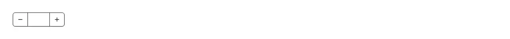

A number field with − and + stepper buttons either side of it. Reach for it wherever someone adjusts a number by one rather than typing it: a quantity picker in a cart, checkout or order form, seats, guests, rooms, tickets or attendees, a per-page or page-size control, retries, timeout or concurrency in a settings panel, font size, padding or spacing in an editor — anywhere you would otherwise reach for a bare <input type="number"> or a spinbutton. It keeps type="number" underneath, so native validation and valueAsNumber still work, and fixes the parts of it that are unpleasant in practice: the browser's own spin buttons are hidden (they are inconsistent across browsers and absent on mobile) and replaced with real, theme-aware, keyboard-reachable ones, inputMode="decimal" brings up the numeric keypad on phones, and the value is tabular-nums so the digits do not jump as they change. Decimal steps do not drift: stepping by 0.1 counts the step's decimal places and rounds to them, so you get 0.3 rather than 0.30000000000000004. Each button clamps to min or max and disables itself once the value is at that bound, and the buttons are taken out of the tab order so Tab still lands on the field itself. The step is written through the input's native value setter and dispatches a real input event, which is the part that is easy to get wrong: onChange fires whether the field is controlled or uncontrolled, so react-hook-form, Formik and plain useState all see the change instead of silently missing button presses. Only one of value/defaultValue ever reaches the input, so React never warns about switching between controlled and uncontrolled. Official shadcn/ui has no number field: its input is a bare 768-byte element, and input-group and field are assembly kits that pull in button, input, textarea, label and separator without a line of numeric logic between them — no stepping, no clamping, no min/max state. This depends only on lucide-react for the two icons.

Rendered on the shadcn default neutral palette with harness-generated props.
pnpm dlx shadcn@4.21.0 add @pulld/number-input
| licence | POINTER |
|---|---|
| primitive base | none |
| type | registry:ui |
| files | src/components/ui/number-input.tsx |
| npm deps pulled | none beyond the pre-installed peer set |
| registry deps | — |
| semantic / palette / hex | 10 / 0 / 0 |
| writes shared ui/ | yes — can overwrite the project’s own primitives |